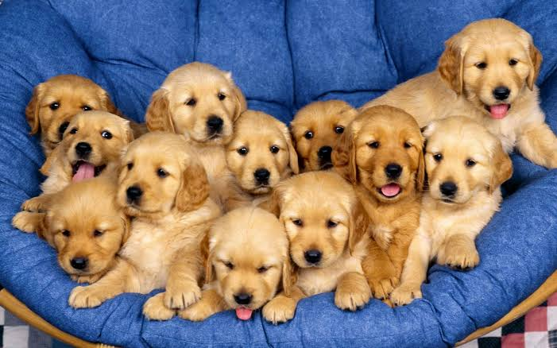
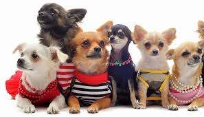

RAZA DE PERROS
Los Perros nos dan amor,amistad y felicidad a cambio de tan poco: Con solo una caricia los hacemos Felices.Son leales,fieles estan dispuestos a ayudar y hasta llegar a ser parte de nuestra familia: una vida sin perro es para mucha gente una vida vacia y Solitaria. Los Perros no son simples mascotas ni adornos para impresionar,no son juguetes para usar y tirar ni objetos.Son seres inteligentes y con sentimientos.
Maritza Perez Ramirez:
Programacion 1
M.C Jorge Cruz Perez
Licenciatura en Computacion
3er SEMESTRE
